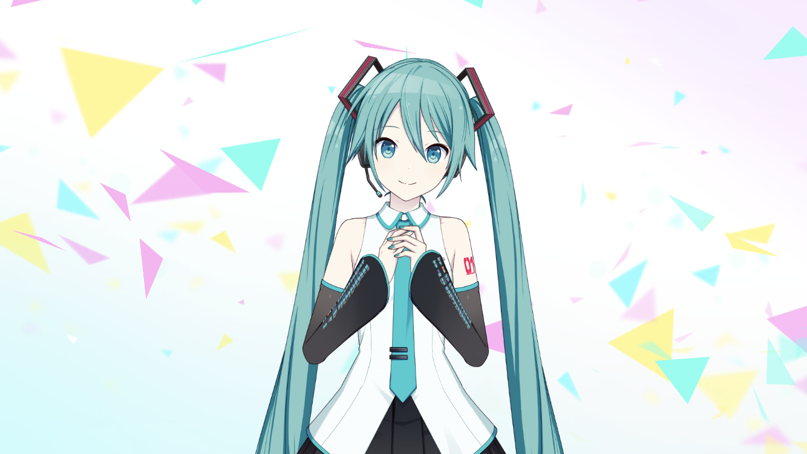

セカイ診断

「キミは……みんなの想いを、そしてセカイを見守りたいって思ってくれてるんだね。」
「ねえ。ちょうど新しいセカイが生まれようとしてるよ。」
「キミにも聴こえる？」
ここでは、どのユニットのことを学ぶか決められていない人のために、あなたにおすすめのユニットを診断します。
あまり深く考えず、直感的に感じたものを答えてみてください。
(ゲーム内のチュートリアルを再現したものです)
聴こえてきた想いは…
その音色は…
見えた景色は…
あなたにおすすめのユニットは…
Leo/need
あらすじ
様々な事情からすれ違い、幼馴染みと疎遠になってしまった星乃一歌。
しかし、幼馴染みのひとりで療養をしていた、天馬咲希が学校に戻ってきたことをきっかけに、遠ざかっていた4人の距離に変化が表れ始める。
様々な事情からすれ違い、幼馴染みと疎遠になってしまった星乃一歌。
しかし、幼馴染みのひとりで療養をしていた、天馬咲希が学校に戻ってきたことをきっかけに、遠ざかっていた4人の距離に変化が表れ始める。
MORE MORE JUMP！
あらすじ
アイドルを夢見るものの、オーディションには不合格続きの花里みのり。
それでも、憧れのアイドル"桐谷遥"の存在を胸に、頑張り続けていた。
ところがその桐谷遥が突如、アイドルを辞め、芸能界を引退してしまう。
アイドルを夢見るものの、オーディションには不合格続きの花里みのり。
それでも、憧れのアイドル"桐谷遥"の存在を胸に、頑張り続けていた。
ところがその桐谷遥が突如、アイドルを辞め、芸能界を引退してしまう。
Vivid BAD SQUAD
あらすじ
内気で何をするにもびくびくしてしまう小豆沢こはね。
ある日、裏通りから聞こえてきた歌と音楽に衝撃を受ける。
そして、それを歌っていた白石杏に導かれるように、ストリートの音楽へと足を踏み入れていく。
内気で何をするにもびくびくしてしまう小豆沢こはね。
ある日、裏通りから聞こえてきた歌と音楽に衝撃を受ける。
そして、それを歌っていた白石杏に導かれるように、ストリートの音楽へと足を踏み入れていく。
ワンダーランズ×ショウタイム
あらすじ
世界一のショースターを夢見る天馬司は、人気テーマパークのキャストアルバイトとして採用される。
しかし、配属されたのは客も寄り付かないさびれたステージ。
そこでただひとり、ステージの復活を目指して頑張る鳳えむと出会う。
世界一のショースターを夢見る天馬司は、人気テーマパークのキャストアルバイトとして採用される。
しかし、配属されたのは客も寄り付かないさびれたステージ。
そこでただひとり、ステージの復活を目指して頑張る鳳えむと出会う。
25時、ナイトコードで。
あらすじ
ボイスチャットツール『ナイトコード』でやり取りをしているサークル仲間と日々楽曲づくりをしている宵崎奏。
お互い顔も名前も知らないが、それなりにうまくやっていたはずだった。
しかし、ある日を境にサークル仲間のひとりと連絡が取れなくなってしまう。
ボイスチャットツール『ナイトコード』でやり取りをしているサークル仲間と日々楽曲づくりをしている宵崎奏。
お互い顔も名前も知らないが、それなりにうまくやっていたはずだった。
しかし、ある日を境にサークル仲間のひとりと連絡が取れなくなってしまう。